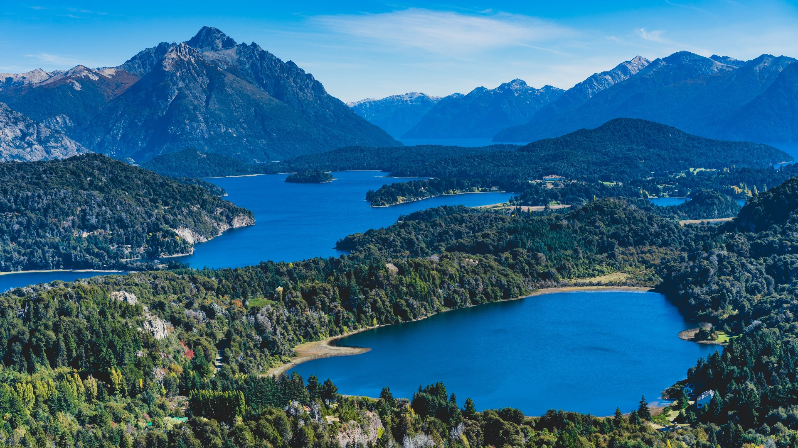
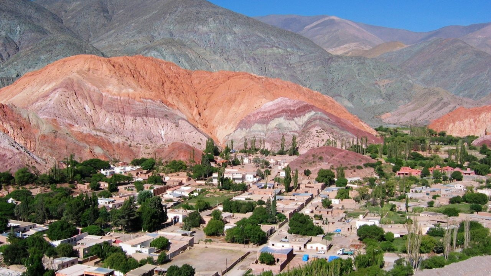

Visita uno de estos lugares
Bariloche

- Visita Bariloche y participa de todas sus excursiones!
- Circuito Chico: Paseo en barco por el lago Nahuel Huapi, con paradas en la Isla Victoria y el Bosque de Arrayanes. Cerro Tronador: Caminata hasta el glaciar Ventisquero Negro, con vistas impresionantes de la cordillera de los Andes. Siete Lagos: Paseo en auto por un camino escénico que bordea siete lagos de color turquesa. Villa La Angostura: Pueblo pintoresco a orillas del lago Nahuel Huapi, con centro comercial y opciones gastronómicas.
- Aventura: Rafting en el río Manso: Recorrido emocionante por un río de aguas rápidas, con rápidos de hasta clase IV. Cabalgata por la cordillera: Exploración única de paisajes de montaña, guiada por expertos a través de bosques, praderas y ríos. Trekking al Cerro Catedral: Caminata desafiante hasta la cima del Cerro Catedral, el punto más alto de la zona. Parapente: Experiencia inolvidable para sobrevolar los lagos y montañas de Bariloche.
- Jardín Botánico: Paseo tranquilo por un jardín con más de 2000 especies de plantas de todo el mundo. Colonia Suiza: Réplica de un pueblo suizo con restaurantes, tiendas y un museo. Parque Nacional Nahuel Huapi: Parque nacional con actividades para disfrutar en familia, como senderismo, pesca y camping. Centro Cívico: Centro cívico de Bariloche, con hermosa arquitectura y monumentos históricos.
- Para más información: click aqui
Jujuy

- Jujuy: Un viaje por la magia de los Andes Jujuy, tierra de contrastes y colores vibrantes, te invita a sumergirte en la cultura milenaria, la naturaleza imponente y la calidez de su gente. Desde la Quebrada de Humahuaca, Patrimonio de la Humanidad, hasta las Salinas Grandes y los pueblos históricos, Jujuy ofrece un abanico de experiencias para todos los gustos.
- Descubriendo la Quebrada de Humahuaca: Recorre este valle multicolorido, declarado Patrimonio de la Humanidad por la UNESCO, y maravíllate con sus cerros multicolores, pueblos tradicionales y sitios arqueológicos. Puedes transitarla en auto, bus, bicicleta o senderismo, disfrutando de paisajes únicos.
- Las Salinas Grandes, un mar de sal: Adéntrate en este salar infinito, uno de los más grandes de Argentina, y vive una experiencia surrealista. Camina sobre la superficie de sal, visita el Museo de Sal o emprende un tour en 4x4 para explorar este paisaje fascinante.
- Purmamarca, un pueblo pintoresco: Recorre las calles empedradas de este pueblo encantador, ubicado al pie del Cerro de los Siete Colores. Visita el mercado de artesanías, sube al cerro para disfrutar de vistas panorámicas o simplemente déjate cautivar por su ambiente acogedor.
- Tilcara, historia entre cerros: Explora este pueblo histórico, antigua capital de la civilización Omaguaca, y descubre sus ruinas arqueológicas. Visita el Pucará de Tilcara, el Museo Regional Arqueológico o la Iglesia San Francisco y adéntrate en la historia de esta región.
- Humahuaca, la capital jujeña: Conoce esta ciudad colonial, capital de la provincia, y admira sus edificios históricos como la Catedral de San Francisco de Jujuy y el Cabildo de Jujuy. Visita el Mercado Municipal para comprar artesanías y productos locales y disfruta de la vibrante cultura local.
- Más allá de lo tradicional: Jujuy ofrece un sinfín de opciones para quienes buscan aventura. Visita el Parque Nacional Yacuma, navega en balsa por el Río Grande o recorre la Serranía de Hornocal, un paisaje geológico de colores vibrantes.
- Para mas información: click aqui
mendoza

- Mendoza, tierra de vinos y montañas, ofrece una gran variedad de excursiones para todos los gustos. Desde amantes del vino hasta aventureros y exploradores, aquí encontrarás la actividad perfecta para ti.
- Ruta del Vino: Embárcate en un recorrido por las bodegas de la región y descubre los secretos de la elaboración del vino mendocino. Degusta diferentes variedades, aprende sobre el proceso de producción y disfruta de la arquitectura y los paisajes de los viñedos.
- Alta Montaña: Atrévete a explorar la imponente Cordillera de los Andes. Realiza trekking por senderos que te llevarán a lugares paradisíacos, como el Aconcagua, el pico más alto de América, o el Puente del Inca, una maravilla natural formada por la erosión del río.
- Aventura: Si buscas adrenalina, Mendoza te ofrece rafting en el río Mendoza, puenting, parapente y tours en 4x4 por el desierto. Vive experiencias emocionantes y conecta con la naturaleza en estado puro.
- Ciudad de Mendoza: No te pierdas la encantadora ciudad de Mendoza. Recorre su centro histórico, visita la Plaza Independencia, sube al Cerro de la Gloria para obtener vistas panorámicas y sumérgete en la cultura local.
- Otras excursiones: Spa, clases de cocina, tours gastronómicos, visitas a pueblos cercanos como Luján de Cuyo o Maipú... ¡Las opciones son infinitas!
- Para más información: click aqui